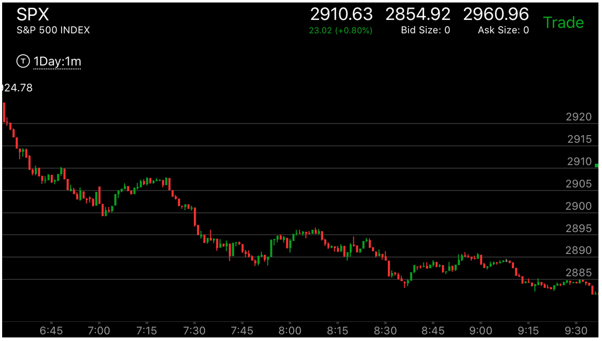
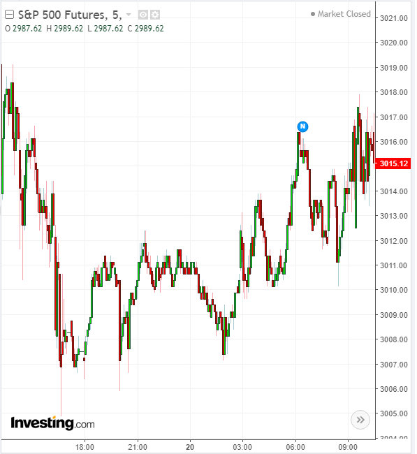

强大的第一浪后，只发生了一次加速，各种变化
- 如果是强大的一浪后，再次加速，然后走平，那么会填补真空，但也有可能全面反转取决于走势本身的形状
- 如果强第一浪后，再次加速，幅度不如第一浪，但是立刻拉回。那么这个第一浪不会结束。它会填补真空后，
继续前进
- 如果出现强第一浪，但是出现了缓慢的前进，那么连真空不会填补，而且直接前进。

图示：开盘上涨形成两段走势，第一浪很大，立刻下跌，说明仍然处于升势。
长时间震荡后，再次冲高，形成了升势。它每次拉回都有加速下跌。不断的升高。

图示：它的第一浪下跌很强。然后走平再次下跌。说明这个不会反转，这个相当于一个缓冲的垫子。后面再次加速，停留时间很短。
反弹后，出现了叠加走势。高点停留很久。这样，未来一定会大跌。


图示：收盘后，出现了一个很大的大浪。这个就是第一浪。
这个其实有些困难的地方。因为在收盘前，它大涨，如果两个结合起来看，似乎这个浪是第二浪。但是其实不是如此。
因为这个发生在收盘后，而且幅度大的多。可见是有新的新闻导致的。所以这个是第一浪。
19：40的时候，它回调，出现了一个加速走势。幅度不大。但是没有了第二次加速。这个说明它仍然在升势，但是需要填补真空了。
它在盘后大跌。填补真空。这个应该不是第二浪的走势，而是属于创新低后，快速返回高点的走势。或者也可以看成是从高点快速下来的
走势。但是不属于在高点徘徊很久的走势，因为它总结走低很多。
第二天开盘后，冲高，走低。勉强出现了两段走势。6：40是第一段。6：50是第二段结束。结合盘前走势。可以看到它3002是真空点。所以这个两段走势虽然看起来不是一个正常的两段走势。
因为它第一段速度快，第二段勉强超过第一段幅度。但是也反转了。然后大涨。这时大盘仍然处于升势。大盘仍然处于升势，但是一天之内都在震荡。可以逢低做多。

图示：第一浪很大，6：45是第二次加速。但是在底部没有停留，立刻反弹。说明这个不是底部。
它反弹后，填补真空。这个不好预测到底填补在哪里。只能从填补真空本身的走势来分析。它在7：05加速上涨，
然后开始下跌。创新低后，再次加速。反弹很小。这个就是底部了。从另外的角度看，它的反弹很大，
接近最高点。中间基本没有什么阻力点，一旦反转，一定会超过高点的。



图示：盘前没有很明确的走势形状。开盘后，它大幅上涨，然后拉回，再次小幅上涨，形成了加速。
然后走平。这个就是反转了。结合盘前走势看，它实际上第一浪就是加速浪，然后再次加速。一定会反转。但它在高位徘徊了很久。
超过了3个小时。这样一旦下跌，不会停留。会大跌。

图示：开盘后，出现了强大的第一浪。它继续走低，7：00出现了加速，然后反弹。要看到这个反弹只有一次。而幅度显然不对。这样大盘仍然处于跌势。反弹只会填补部分真空。
它在反弹很久后，大跌。

图示:开盘后出现了强大的第一浪，然后反弹，再次加速下跌，创新低，立刻反弹。
开始了填补真空。10：20它再次创新低，加速下跌，这次再次形成了加速走势。开始反弹，
但是它的幅度无法和开盘第一浪相比。另外关键在于，它是立刻反弹的，不是在底部停留一段时间。
所以这个点一定不是最低点。所以无法填补反转，只是填补真空。11：10联邦宣布利率后，它出现了两段下跌走势。
这时，它的第二段下跌速度超过了开盘的第一浪，这样造成了全面反转。